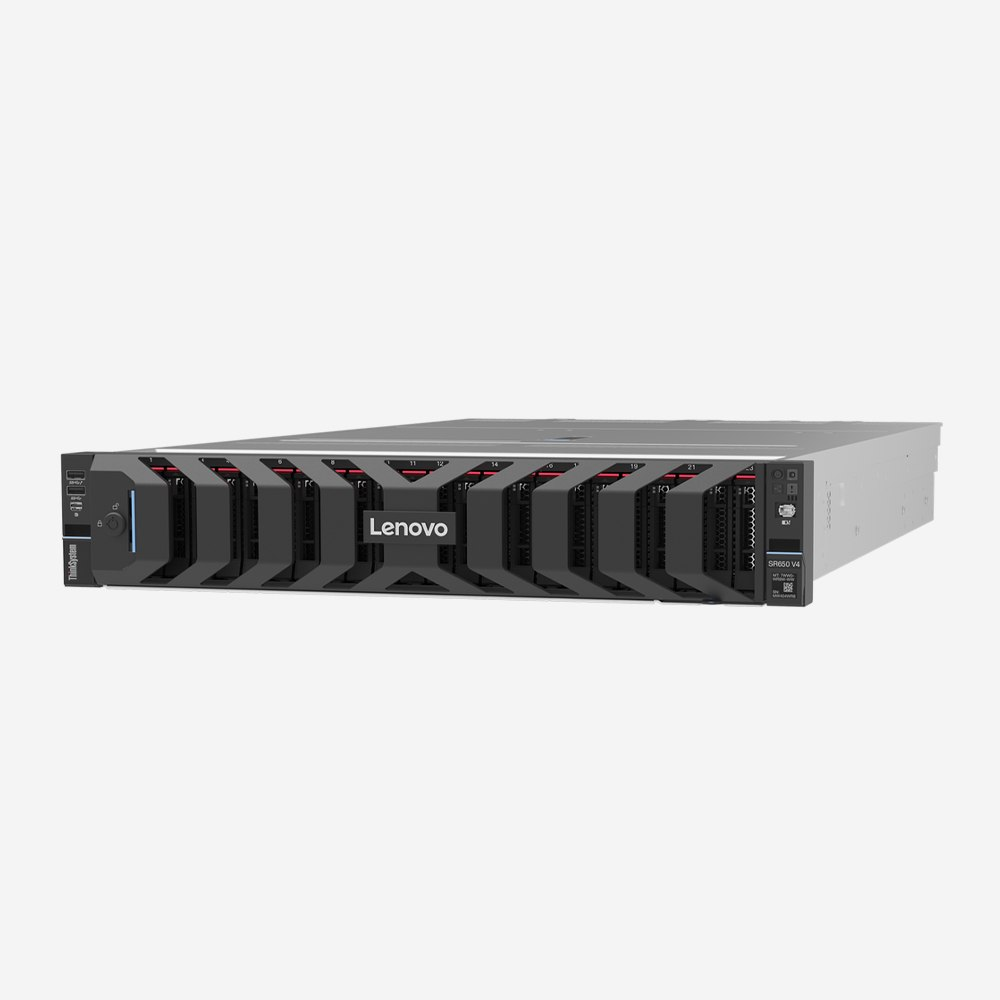
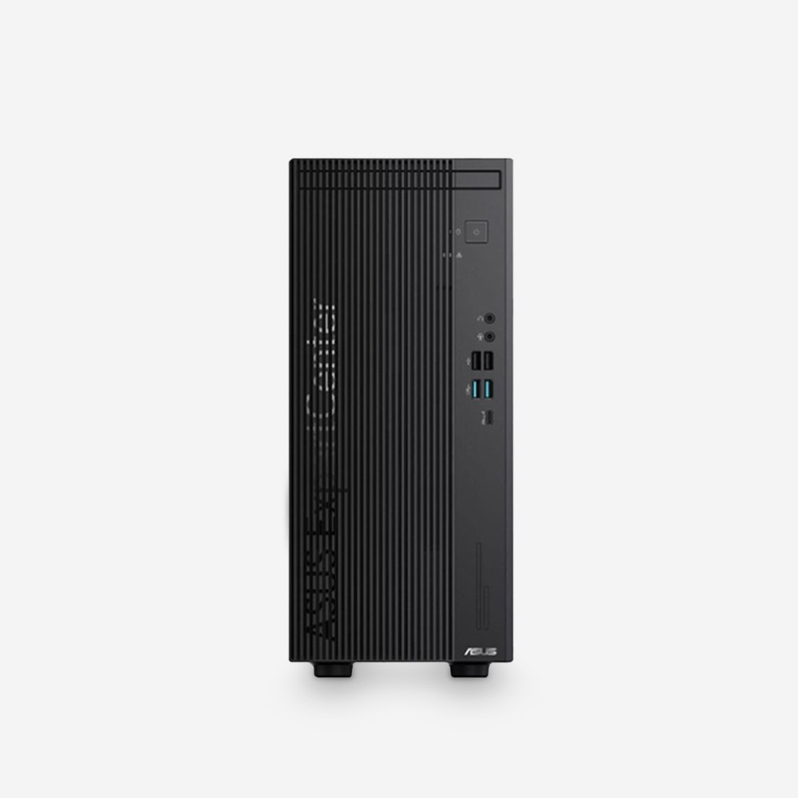
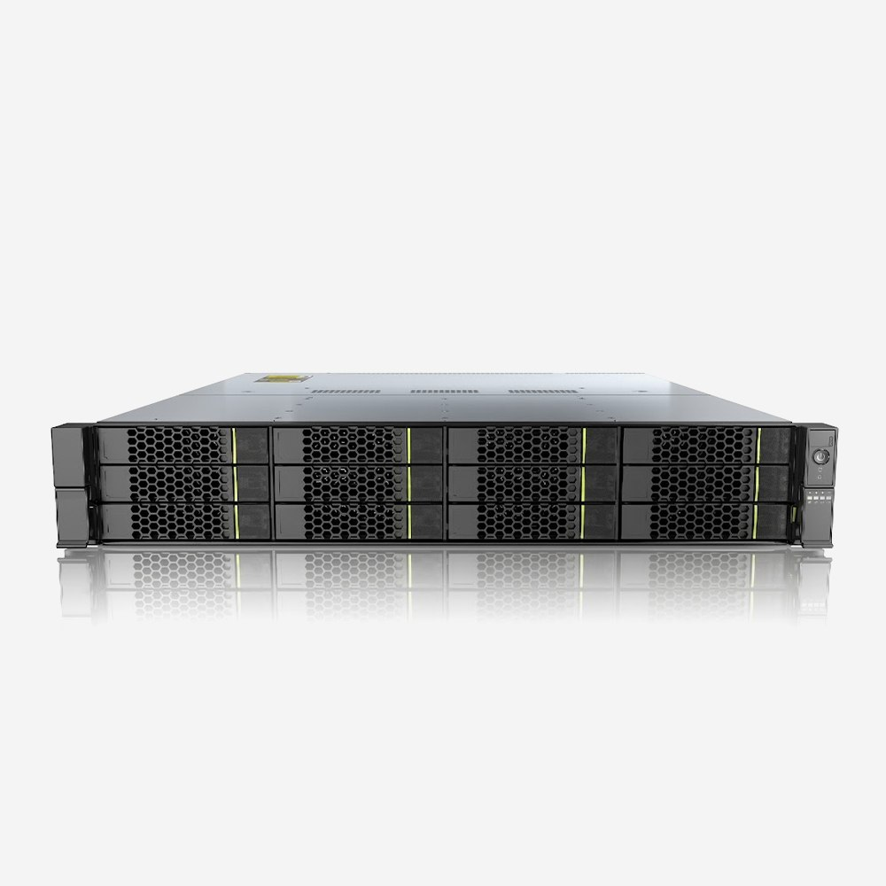

온코어 — Lenovo 서버·워크스테이션·노트북 기업 구매와 견적
- Lenovo · ASUS기업용 라인업 한곳에서
- 담당자 직접 회신요청마다 담당자 배정·문자 안내
- 세금계산서 발행법인·개인사업자
- 구성 상담용도에 맞춘 사양 제안
업무에 맞춘 추천 구성
용도를 고르면 시작하기 좋은 구성을 보여 드립니다. 그대로 견적을 받거나 사양을 바꿔 요청하세요.
도면이 무거워져도
화면이 끊기지 않게.
AutoCAD·Revit·SolidWorks처럼 CPU 단일 성능과 인증 그래픽카드가 중요한 작업에 맞춘 구성입니다.
- AutoCAD
- Revit
- SolidWorks
- CATIA
추천 구성
- CPU
- Xeon w3-2425
- GPU
- RTX A1000 8GB
- 메모리
- 32GB DDR5
- 저장
- 512GB + 2TB
- 전원
- 1000W
렌더링은 기다리는 시간이
곧 비용입니다.
Premiere·DaVinci·3ds Max 렌더링처럼 GPU 메모리와 저장 공간을 많이 쓰는 작업용 구성입니다.
- Premiere Pro
- DaVinci Resolve
- 3ds Max
- V-Ray
추천 구성
- CPU
- Xeon w3-2425
- GPU
- RTX 2000 Ada 16GB
- 메모리
- 32GB DDR5
- 저장
- 512GB + 2TB
- 전원
- 1000W
학습과 추론을
사내에서 바로.
여러 장의 GPU를 꽂는 AI 서버는 용도·모델 크기에 따라 구성이 크게 달라 담당자가 직접 설계합니다.
- PyTorch
- TensorFlow
- CUDA
- 사내 LLM
추천 구성
- 형태
- 2U 랙 서버
- CPU
- Xeon 6 · 2소켓
- GPU
- 용도별 구성
- 메모리
- DDR5 고용량
- 저장
- NVMe 구성

사무실 PC 일괄 교체,
한 번에 맞춥니다.
문서·ERP·화상회의 중심 업무에 맞춘 구성입니다. 운영체제 포함·미포함을 고를 수 있고 수량별 견적을 드립니다.
- Office
- 그룹웨어
- ERP
- 화상회의
추천 구성
- CPU
- Core Ultra 5 225
- 메모리
- 32GB(16+16)
- 저장
- 512GB SSD
- OS
- FreeDOS / Win11 Pro
- 형태
- 미니타워 · SFF

흩어진 파일을
한 곳에 안전하게.
여러 팀이 같은 데이터를 빠르게 열고, 정기 백업까지 할 수 있는 All-Flash 스토리지 구성입니다.
- 파일 공유
- 가상화
- 백업
- 스냅샷
추천 구성
- 방식
- SAN + NAS
- 디스크
- All-Flash
- 형태
- 2U 랙마운트
- 연결
- 용도별 구성
- 용량
- 요청 기준 설계

많이 찾는 제품
전체 제품
서버
사내 sLLM 구축을 위한 Lenovo GPU 서버 아키텍처 가이드
클라우드 API 비용 절감과 기업 데이터 보안을 함께 잡는 온프레미스 AI 인프라. ThinkSystem SR675 V3·SR650 V3 기반 구성을 정리했습니다. 데스크탑책상 위 공간이냐, 넉넉한 확장성이냐? ASUS ExpertCenter D7 비교
Core Ultra 5·DDR5 32GB를 갖춘 15L 미니타워와 9L 슬림(SFF)의 핵심 차이를 정리했습니다. 워크스테이션[현장 스케치] Lenovo 파트너 행사 후기 — ThinkStation P4와 AI Express
Lenovo 360 Evolve '26에서 발표된 수랭식 ThinkStation P4와 납기 30일 단축 프로그램을 전해 드립니다.필요한 사양만 알려주세요.
정확한 모델명을 몰라도 괜찮습니다. 용도와 예산을 적어 주시면 맞는 구성을 제안합니다.
- 담당자 직접 회신
- 용도에 맞춘 사양 제안
- 세금계산서 발행